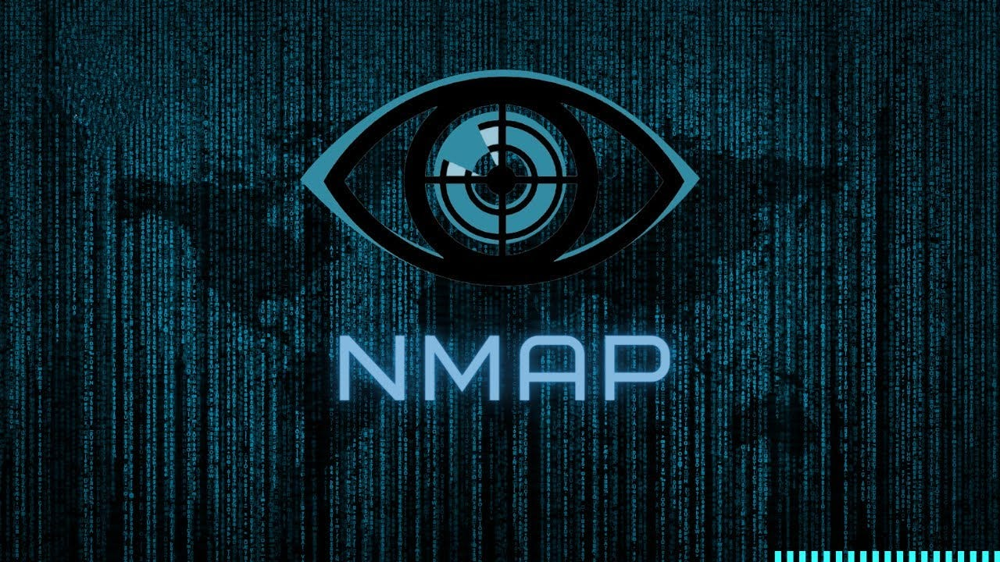
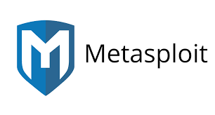
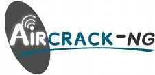

Hacking Tools
In the world of ethical hacking, various tools are essential for conducting penetration tests, vulnerability assessments, and security audits. Below are some of the most widely used hacking tools:
1. Nmap
Nmap (Network Mapper) is an open-source tool used for network discovery and security auditing. It allows users to scan networks and identify hosts, services, and vulnerabilities.
2. Metasploit
Metasploit is a powerful framework used for developing and executing exploit code against a remote target. It is widely used for penetration testing and vulnerability assessment.
3. Wireshark
Wireshark is a network protocol analyzer that lets users capture and interactively browse traffic on a computer network. It is an essential tool for network troubleshooting and analysis.
4. Burp Suite
Burp Suite is a popular platform for web application security testing. It provides tools for scanning, crawling, and attacking web applications to find vulnerabilities.
5. Aircrack-ng
Aircrack-ng is a suite of tools used for assessing the security of Wi-Fi networks. It focuses on different areas of Wi-Fi security, including monitoring, attacking, and cracking WEP and WPA/WPA2 encryption keys.